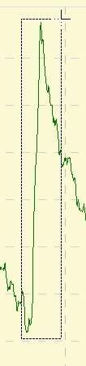
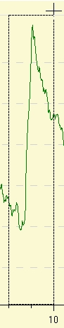

Zoomen und Positionieren im Grafikfenster
  Wird das Menü zoomen aktiviert ändert sich der Mauszeiger zu einem kleinen Kreuz, das durch drücken der rechten Maustaste einen Eckpunkt des Kurvenausschnittes festlegt. Bei gedrückt gehaltener Maustaste kann nun ein Ausschnitt gewählt werden, der dann nach dem Loslassen der Maustaste vergrößert dargestellt wird. Hinweis : Möchte man ausschließlich in einer Richtung zoomen, kann der Anfangs- und End-Punkt des Auswahlbereichs außerhalb der Kurvenbegrenzung liegen. Dadurch erreicht man, dass das Auswahlrechteck und den horizontalen oder vertikalen Begrenzungen beginnt. Auch im bereits vergrößertem Kurvenausschnitt lässt sich im Bedarfsfall weiter hineinzoomen.

Die Verschiebefunktion ändert den Mauszeiger in eine Hand. Nun lässt sich die Kurve bei gedrückter linker Maustaste positionieren.
Das Zurücksetzen des vergrößerten Kurvenausschnittes erfolgt, wie in der Beschreibung der Menüs durch Selektion der Funktion "Zoom Grafikfenster zurücksetzen".
Oszilloskopemode
Um während eines Aufnahmevorgangs laufend einen vergrößerten Ausschnitt, der zuletzt aufgenommenen Werte, zu verfolgen, wird ein Schalter angeboten über den die Anzahl der angezeigten Messpunkte bestimmt werden kann. Nun kann man, ähnlich einem Oszilloskop, die Datenaufnahme betrachten.

Oben in der Toolbar ist der Schalter eingekreist. Ausgewählt sind aktuell 50 Punkte. Unten ist der sich ständig verändernde Wert des ausgeblendeten Zeitraums eingekreist. Hier bekommt man die Übersicht über die Laufzeit des gesamten Messablaufes. Im Beispiel sind vier Spannungskurven von Lithiumzellen gezeigt, die über den Balancer ständig korrigiert werden.
Im Gegensatz visualisiert das Zellenspannung Anzeigefenster nur den letzten Messwert.